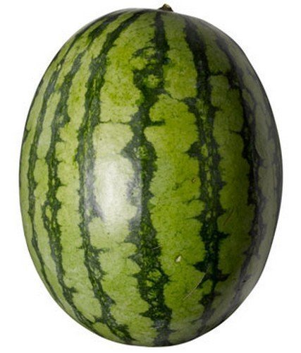

Watermelon Tribe

Welcome to the watermelon province!We have the largest province in the world!We are a country of peace and our army is extremely powerful as it is powered by super stars.We are a mass producer of one up mushrooms and have good medical support as we are studying the one up mushrooms.A few of our citizens can bend earth,and if you are reading this,there is a high chance you are a member of the watermelon tribe discord server.If not,then please go to contact to join!Have a good time in our group!
Work
Fiction and art pieces will be put below...when people make it.
Headlines
Cocoa tribe joins the fight!

After secretly going to the cocoa tribe and negotiating with lord Willy Wonka,he lended the white chocolate tribe of the cocoa province to our aid in the war.The white chocolate tribe has some of the smartest scientists ever and can help in nuke and bomb modifications as we already have tight physical security and goodly trained soldiers.However,the opposition (berry tribe) is going to try to bring the milk chocolate tribe to their side.However,mr.Willy Wonka is already trying to prevent that and trying to put the milk chocolates on our side.The president of watermelon is thinking about whether he should send his army to protect the cocoa tribe from berry attacks and is leaning to a "yes".